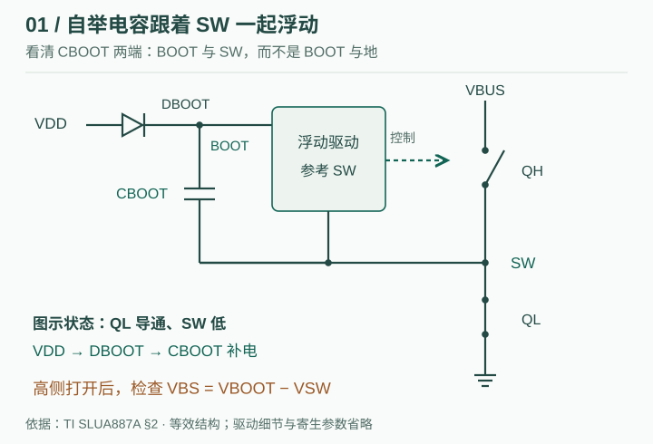
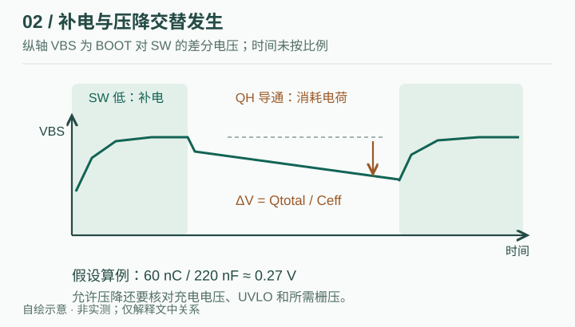

采用二极管和电容自举供电的半桥，高侧驱动以开关节点为参考。开关节点降到足够低的电位时，自举电容才能经二极管充电。高侧导通后，电容随开关节点一起升高，为高侧驱动提供浮动电源。
导通期间，电荷从哪里来
自举电容需要承担 MOSFET 的栅极充电、驱动器静态消耗和漏电。高侧保持导通越久，剩余电压可能越低。普通自举结构无法靠一个电容无限维持高侧导通，要核对驱动器是否另有电荷泵或独立浮动电源。

用电荷估算一次压降
用 CBOOT,eff ≥ Qtotal / ΔV 估算起点，Qtotal 包括栅极电荷及该导通时间内的其他消耗。假设总耗电荷为 60 nC，有效电容为 220 nF，则电压下降约 0.27 V。这组假设只演示电荷关系。
允许压降要根据实际充电电压、二极管压降、高侧欠压锁定阈值和所需栅极驱动电压确定。陶瓷电容还要计入偏压下的有效容量。

电容加大，也要留出充电时间
充电路径中的二极管、电阻及驱动电源阻抗会限制补电速度。容量越大，启动时需要补充的电荷也越多。要一起检查最低开关节点电位、最短低侧导通时间、首次启动和最长高侧脉冲。
在实际波形上核对
在已确认安全的测试条件下，用合适的差分测量检查 BOOT 与开关节点之间的电压，以及高侧栅源电压。固定输入、负载和频率，逐步改变导通时间，观察电压最低点和欠压锁定行为。以器件数据手册的阈值与推荐工作范围判断余量。